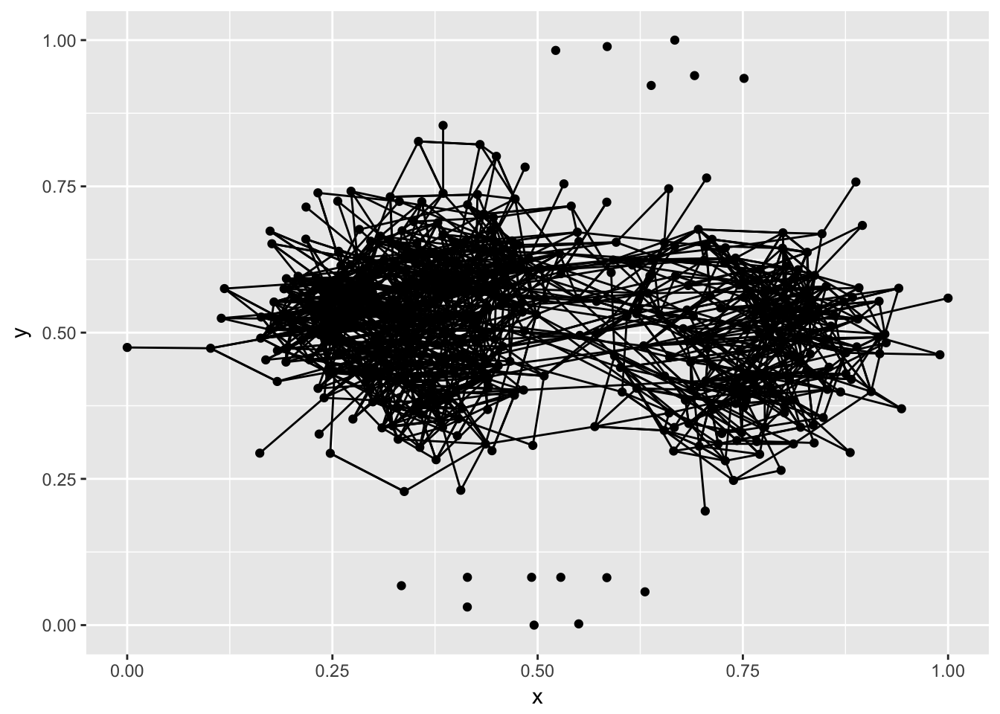

We first met as a team with an idea to study adolescent health. We had explored a few datasets, particularly the ‘Add Health’ national longitudinal study which encompasses four different time points. Since the survey is very large and wide-ranging, we decided to focus on sexual health issues.
Our project will analyze data pertaining to the health of adolescents. We are using the database ‘add health,’ which is a national longitudinal study of adolescent to adult health patterns. This dataset encompasses four different time points, and poses a variety of questions for the responder on topics such as ‘risk behavior,’ ‘reproductive health,’ ‘physical health,’ and so on. The goal of this research is to present visual patterns of these health behaviors via ggplot and network visualizations. Our main variables/topics of interest at the moment are: racial and gender dynamics in networks, gender roles/gender typed behavior, sexual knowledge of birth control methods. Furthermore, we want to perform an overall analysis of racial and gender dynamics in friendship networks. So far, we have explored our areas of interest and selected topics to analyze. The data from the survey is presented in multiple waves, as previously mentioned. To begin, we will be pulling data from the Wave 4 (2008) in-home interview file. We have downloaded this dataset as an rdata file and imputed it. The questions in wave 4 focus mainly on risk behaviors, so we may need to supplement with data from another wave. We may also do comparison of the same question over multiple waves. The main limitation with this data is that it is survey data. This possibility of self-report bias could pose a limitation to our research, as it could hinder the accuracy of our results. Furthermore, the geospatial component of our analysis may be problematic. Lastly, the variation of questions over the different waves could hinder our longitudinal comparison abilities.
Part 1: Contextualize survey + survey instruments (text analysis) + census data demographic trends Visualization 1: text analysis word cloud Visualization 2: sentiment analysis Visualization 3: map with census data race over time Visualization 4: map with census data gender over time Visualization 5: map with census data age over time Visualization 6: map with census data teen pregnancy over time
Part 2: Sexual health ggplots + networks Visualization 7+more: ggplots from add health Birth control methods Questions about partners Questions about losing virginity Visualization 8: gender networks [smallest, largest] Visualization 9: race networks [smallest, largest] Visualization 10: grade networks [smallest, largest]
This was the part of the project I (Meredith) worked on. I wanted to visualize relationships in the Wave 1 In-Home Questionnaire data that show teen sexual/risk behaviors. I was interested to find out the gender and racial background demographics of the data as an initial introduction to this section. Then, I explored the patterns in questions related to AIDS, such as “how many people do you know with aids?” “what are your perceived chances of contracting aids?” and “was the topic of aids taught in school?” as well as questions about the chances of contracting aids if one is very sexually active. By using multiple AIDS-related variables, I intended to paint a clearer picture of the topic of AIDS in teens. I also wanted to examine birth control-related questions. More specifically, I wanted to see the prevalence of birth control usage/birth control planning in sexually active couples that did not want pregnancy.
library(readr)
library(ggplot2)
library(ggthemes)
d <- read.csv("~/Desktop/21600-0001-Data.csv")
View(d)
# Race:
table(d$H1GI9)
d$race <- as.factor(d$H1GI9)
table(d$race)
d$race_1[d$race==1] <- "White"
d$race_1[d$race==2] <- "Black"
d$race_1[d$race==3] <- "Native American"
d$race_1[d$race==4] <- "Asian"
d$race_1[d$race==5] <- "Other"
table(d$race_1)
# Gender:
table(d$BIO_SEX)
d$sex <- as.factor(d$BIO_SEX)
table(d$sex)
d$sex_1[d$sex==1] <- "Male"
d$sex_1[d$sex==2] <- "Female"
table(d$sex_1)
# General health:
table(d$H1GH1)
d$health <- as.factor(d$H1GH1)
table(d$health)
# Last date of physical exam (p.33 of survey):
table(d$H1GH24)
d$physicalexam <- as.factor(d$H1GH24)
table(d$physicalexam)
# Chances of getting aids (p.43 of survey):
table(d$H1GH44)
d$aidschances <- as.numeric(d$H1GH44)
table(d$aidschances)
# Friends with aids:
table(d$H1GH45)
d$aidsfriends <- as.numeric(d$H1GH45)
table(d$aidsfriends)
# Chances of getting STD's:
table(d$H1GH46)
d$stdchances <- as.numeric(d$H1GH46)
table(d$stdchances)
# Friends with STD's:
table(d$H1GH47)
d$stdfriends <- as.numeric(d$H1GH47)
table(d$stdfriends)
# Topic taught in school: Pregnancy (p.50 of survey):
table(d$H1TS7)
d$pregtaught <- ifelse(d$H1TS7== 1, 1, 0)
table(d$pregtaught)
d$pregtaught <- cut(d$pregtaught, c(-1, 0, 1), labels=c("Pregnancy not taught in school", "Pregnancy taught in school"))
table(d$pregtaught)
# Topic taught in school: Aids:
table(d$H1TS8)
d$aidstaught <- ifelse(d$H1TS8== 1, 1, 0)
table(d$aidstaught)
# Hassle of protecting oneself from STD's (p.83 of survey):
table(d$H1RP4)
d$stdprotectionhassle <- as.numeric(7-d$H1RP4)
table(d$stdprotectionhassle)
d$stdprotectionhassle <- cut(d$stdprotectionhassle, c(1,2,3,4,5,6), labels=c("Strongly Disagree", "Disagree", "Neither", "Agree", "Strongly Agree"))
table(d$stdprotectionhassle)
# Chances of pregnancy if not using birth control:
table(d$H1RP5)
d$nobcpregchance <- as.numeric(7-d$H1RP5)
d$nobcpregchance <- cut(d$nobcpregchance, c(1,2,3,4,5,6), labels=c("Almost Certain", "A Good Chance", "A 50-50 Chance", "Some Chance", "Almost No Chance"))
table(d$nobcpregchance)
# Chances of Aids if very sexually active (p.84 of survey):
table(d$H1RP6)
d$monthaidschance <- as.numeric(7-d$H1RP6)
table(d$monthaidschance)
d$monthaidschance <- cut(d$monthaidschance, c(1,2,3,4,5,6), labels=c("Almost Certain", "A Good Chance", "A 50-50 Chance", "Some Chance", "Almost No Chance"))
table(d$monthaidschance)
# Planning ahead to use birth control:
table(d$H1SE2)
d$bcplan <- as.numeric(7-d$H1SE2)
table(d$bcplan)
d$bcplan <- cut(d$bcplan, c(0,1,2,3,4,5,6), labels=c("Never want to use Birth Control", "Very Unsure", "Moderately Unsure", "Neither", "Moderately Sure", "Very Sure"))
table(d$bcplan)
# Ideal relationship: talk about std's (p. 239 of survey):
table(d$H1ID1L)
d$talkstds <- ifelse(d$H1ID1L==1, 1, 0)
# 1 = would be ideal, 0 = not be ideal
table(d$talkstds)
# Ideal relationship: have sex
table(d$H1ID1O)
d$havesex <- ifelse(d$H1ID1O==1, 1, 0)
table(d$havesex)
# Ideal relationship: get pregnant
table(d$H1ID1P)
d$getpreg <- ifelse(d$H1ID1P==1, 1, 0)
table(d$getpreg)
# Birth control during first intercourse (p. 261 of survey):
table(d$H1CO3)
d$bc1intercourse <- ifelse(d$H1CO3==1, 1, 0)
table(d$bc1intercourse)
# Birth control method:
table(d$H1CO4A)
d$bcmethod <- as.numeric(13-d$H1CO4A)
table(d$bcmethod)
d$bcmethod <- cut(d$bcmethod, c(-1,0,1,2,3,4,7,8,9,10,11,12), labels=c("Some Other Method", "Contraceptive Film", "Depo Provera", "Ring", "Norplant", "Foam/Jelly/Creme/Suppositories", "Vaginal Sponge", "Birth Control Pills", "Rhythm", "Withdrawl", "Condoms"))
table(d$bcmethod)
d$bcmethod_1[d$bcmethod=="Some Other Method" | d$bcmethod=="Vaginal Sponge" | d$bcmethod=="Foam/Jelly/Creme/Suppositories" | d$bcmethod=="Rhythm" | d$bcmethod=="Norplant"| d$bcmethod=="Ring" | d$bcmethod=="Contraceptive Film"] <- 1
d$bcmethod_1[d$bcmethod=="Withdrawl"] <- 2
d$bcmethod_1[d$bcmethod=="Depo Provera"] <- 3
d$bcmethod_1[d$bcmethod=="Birth Control Pills"] <- 4
d$bcmethod_1[d$bcmethod=="Condoms"] <- 5
table(d$bcmethod_1)
d$bcmethod_1 <- ordered(d$bcmethod_1,
levels = c(1,2,3,4,5),
labels = c("Some Other Method", "Withdrawl", "Depo Provera", "Birth Control Pills", "Condoms"))
table(d$bcmethod_1)
# Exploratory:
aidsplot <- ggplot(d, aes(aidsfriends, aidschances)) + geom_point(color=as.factor(d$aidstaught), alpha=1/10) + theme_tufte() + ggtitle("Known People with Aids and Perception of Chances of Contracting Aids") + labs(x="Known People with Aids", y="Perception of chances of Contracting Aids") + facet_grid (~ aidstaught) + geom_smooth(method="loess")
aidsplot
# Visualizations:
d <- d[!is.na(d$race_1), ]
racepie <- ggplot(d, aes(x=race_1, fill=race_1)) + geom_bar() + theme_tufte() + ggtitle("Distribution of Race in the Dataset") + labs(x="Race", y="Count") + scale_fill_discrete(name="Race")
racepie
sexplot <- ggplot(d, aes(x=sex_1, fill=sex_1)) + geom_bar() + theme_tufte() + ggtitle("Distribution of Sex in the Dataset") + labs(x="Sex", y="Count") + scale_fill_discrete(name="Race")
sexplot
d <- d[!is.na(d$bcmethod), ]
d <- d[!is.na(d$bcplan), ]
bcmethodplot <- ggplot(d, aes(bcmethod_1, fill=bcplan)) + geom_bar() + theme(axis.text.x = element_text(size=4)) + ggtitle("Birth Control Method Usage") + labs(x="Birth Control Method", y="Count") + theme_tufte() + scale_fill_discrete(name="Birth Control Method") + coord_flip()
bcmethodplot
d$pregsex[d$getpreg==0 & d$havesex==0] <- "Neither"
d$pregsex[d$getpreg==0 & d$havesex==1] <- "Sex, No Pregnancy"
d$pregsex[d$getpreg==1 & d$havesex==1] <- "Both"
d$pregsex[d$getpreg==1 & d$havesex==0] <- "No Sex, Pregnancy"
table(d$pregsex)
pregplot <- ggplot(d, aes(pregsex, fill=bcmethod)) + geom_bar() + ggtitle("Ideal Relationship Characteristics: Sex and Pregnancy") + labs(x="Characteristics", y="Count") + coord_flip() + theme_tufte() + scale_fill_discrete(name="Birth Control Method")
pregplotMichelle Grushko
Using 2010 census data from American Fact Finder from the United States Census Bureau, we mapped out population estimates broken down by race, gender, and age group. Thus, each map represents a different race: White, Black, and Other, broken down by Males ages 5-15, Males ages 16-20, Females ages 5-15, Females ages 16-20.
Though we initially wanted to include the age range of individuals from 10-19, the age of adolescence as defined by the NIH, we were limited to the age categories provided by the census data available. These age categories visualize the breakdown individuals in the United States per race, age, and sex. Initially, additional maps included two other racial categories: Asian and American Indian/Alaskan Native to correspond with the racial categories in the Add Health Dataset, however these were removed from the final presentation of the visualizations to cooperate with publishing maps on Shiny for presentation.
In order to publish the graphs on Shiny, the shapefile was combined with the census data and rewritten as a second shapefile for reproducibility, and saved out as R objects, as seen in the code below.
Further, to allow for comparison, the decision was made to graph the populations of the groups using quantiles and the same color scale, rather than using a numeric scale, with different color palettes. In addition, because each graphs contains four layers, using a quantile scale allowed for consistency in each layer, and allowed to include a single legend for each map. This was concluded after playing around with various numeric scales which were not included in the code below to save space.
library(tigris)
library(leaflet)
library(dplyr)
library(rgdal)
library(readr)
#get the states shapefile
states <- states()
#examine data
states_data <- states@data
census2000 <- read_csv("~/QMSS/Spring 2017/Data Visualization/Final Project/census/census2000.csv")
#combine data
combined <- states@data %>% left_join(census2000, by = c("NAME" = "Geography"))
states@data <- combined
#write out combined data shapefile to reproduce
writeOGR(obj = states, dsn = "~/QMSS/Spring 2017/Data Visualization/Final Project", layer = "states", driver = "ESRI Shapefile")
#new shapefile
states2 <- readOGR(dsn = "tempdir", layer = "states")
#map for white
whitemap <- leaflet(states2) %>%
addProviderTiles("CartoDB.Positron") %>%
addPolygons(group = "Map", fillColor = "white",
color = "black",
weight = 0.75) %>%
setView(-98.5795, 39.8282, zoom=3)%>%
addPolygons(group = "White Male 5 to 15 Years",
stroke = FALSE, fillOpacity = 0.5, smoothFactor = 0.5,
color = ~colorQuantile("YlGnBu", WhM5_15)(WhM5_15),
popup = paste(states2$NAME,"<br/>",
"White Males 5 to 15 Years Old:", states2$WhM5_15, "<br/>"))%>%
addPolygons(group = "White Male 16 to 20 Years",
stroke = FALSE, fillOpacity = 0.5, smoothFactor = 0.5,
color = ~colorQuantile("YlGnBu", WM16_20)(WM16_20),
popup = paste(states2$NAME,"<br/>",
"White Males 16 to 20 Years Old:", states2$WM16_20, "<br/>"))%>%
addPolygons(group = "White Females 5 to 15 Years",
stroke = FALSE, fillOpacity = 0.5, smoothFactor = 0.5,
color = ~colorQuantile("YlGnBu", WhF5_15)(WhF5_15),
popup = paste(states2$NAME,"<br/>",
"White Females 5 to 15 Years Old:", states2$WhF5_15, "<br/>"))%>%
addPolygons(group = "White Females 16 to 20 Years",
stroke = FALSE, fillOpacity = 0.5, smoothFactor = 0.5,
color = ~colorNumeric("YlGnBu", WF16_20)(WF16_20),
popup = paste(states2$NAME,"<br/>",
"White Females 16 to 20 Years Old:", states2$WF16_20, "<br/>"))%>%
addLegend("bottomleft",
pal = colorQuantile("YlGnBu", states2$WhM5_15), values = ~WhM5_15,
title = "White Population (2000)", opacity = 0.5) %>%
addLayersControl(
baseGroups = c("Map"),
overlayGroups = c("White Male 5 to 15 Years","White Male 16 to 20 Years", "White Females 5 to 15 Years", "White Females 16 to 20 Years"),
options = layersControlOptions(collapsed = TRUE) )
#save out white map as an R file to put on shiny
save(whitemap, file = "whitemap.Rdata")
#map for black
blackmap <- leaflet(states2) %>%
addProviderTiles("CartoDB.Positron") %>%
addPolygons(group = "Map", fillColor = "white",
color = "black",
weight = 0.75) %>%
setView(-98.5795, 39.8282, zoom=3)%>%
addPolygons(group = "Black Male 5 to 15 Years",
stroke = FALSE, fillOpacity = 0.5, smoothFactor = 0.5,
color = ~colorQuantile("YlGnBu", BlM5_15)(BlM5_15),
popup = paste(states2$NAME,"<br/>",
"Black Males 5 to 15 Years Old:", states2$BlM5_15, "<br/>"))%>%
addPolygons(group = "Black Male 16 to 20 Years",
stroke = FALSE, fillOpacity = 0.5, smoothFactor = 0.5,
color = ~colorQuantile("YlGnBu", BM16_20)(BM16_20),
popup = paste(states2$NAME,"<br/>",
"Black Males 16 to 20 Years Old:", states2$BM16_20, "<br/>"))%>%
addPolygons(group = "Black Females 5 to 15 Years",
stroke = FALSE, fillOpacity = 0.5, smoothFactor = 0.5,
color = ~colorQuantile("YlGnBu", BlF5_15)(BlF5_15),
popup = paste(states2$NAME,"<br/>",
"Black Females 5 to 15 Years Old:", states2$BlF5_15, "<br/>"))%>%
addPolygons(group = "Black Females 16 to 20 Years",
stroke = FALSE, fillOpacity = 0.5, smoothFactor = 0.5,
color = ~colorQuantile("YlGnBu", BF16_20)(BF16_20),
popup = paste(states2$NAME,"<br/>",
"Black Females 16 to 20 Years Old:", states2$BF16_20, "<br/>"))%>%
addLegend("bottomleft",
pal = colorQuantile("YlGnBu", states2$BlM5_15), values = ~BlM5_15,
title = "Black Population (2000)", opacity = 0.5) %>%
addLayersControl(
baseGroups = c("Map"),
overlayGroups = c("Black Male 5 to 15 Years","Black Male 16 to 20 Years", "Black Females 5 to 15 Years", "Black Females 16 to 20 Years"),
options = layersControlOptions(collapsed = TRUE) )
#save out black map as an R file to put on shiny
save(blackmap, file = "blackmap.Rdata")
#map for other
othermap <- leaflet(states2) %>%
addProviderTiles("CartoDB.Positron") %>%
addPolygons(group = "Map", fillColor = "white",
color = "black",
weight = 0.75) %>%
setView(-98.5795, 39.8282, zoom=3)%>%
addPolygons(group = "Other Male 5 to 15 Years",
stroke = FALSE, fillOpacity = 0.5, smoothFactor = 0.5,
color = ~colorQuantile("YlGnBu", OtM5_15)(OtM5_15),
popup = paste(states2$NAME,"<br/>",
"Other Males 5 to 15 Years Old:", states2$OtM5_15, "<br/>"))%>%
addPolygons(group = "Other Male 16 to 20 Years",
stroke = FALSE, fillOpacity = 0.5, smoothFactor = 0.5,
color = ~colorQuantile("YlGnBu", OM16_20)(OM16_20),
popup = paste(states2$NAME,"<br/>",
"Other Males 16 to 20 Years Old:", states2$OM16_20, "<br/>"))%>%
addPolygons(group = "Other Females 5 to 15 Years",
stroke = FALSE, fillOpacity = 0.5, smoothFactor = 0.5,
color = ~colorQuantile("YlGnBu", OtF5_15)(OtF5_15),
popup = paste(states2$NAME,"<br/>",
"Other Females 5 to 15 Years Old:", states2$OtF5_15, "<br/>"))%>%
addPolygons(group = "Other Females 16 to 20 Years",
stroke = FALSE, fillOpacity = 0.5, smoothFactor = 0.5,
color = ~colorQuantile("YlGnBu", OF16_20)(OF16_20),
popup = paste(states2$NAME,"<br/>",
"Other Females 16 to 20 Years Old:", states2$OF16_20, "<br/>"))%>%
addLegend("bottomleft",
pal = colorQuantile("YlGnBu", states2$OtM5_15), values = ~OtM5_15,
title = "Other Population (2000)", opacity = 0.5) %>%
addLayersControl(
baseGroups = c("Map"),
overlayGroups = c("Other Male 5 to 15 Years","Other Male 16 to 20 Years", "Other Females 5 to 15 Years", "Other Females 16 to 20 Years"),
options = layersControlOptions(collapsed = TRUE) )
#save out other map as an R file to put on shiny
save(othermap, file = "othermap.Rdata")Becca Portman
I was interested in contextualizing the Add Health study into broader adolescent sexual health trends across the country, so I found data on teen pregnancies from the National Health Indicators website, which I used for an earlier assignment in the class. I noticed that teen pregnancy seemed to be decreasing in every state and for every demographic, and I wondered what was causing this. I combined this data with a list from the Guttmacher Institute on Sex and HIV education policies, and was surprised to find that states with mandatory sex education seemed to be experiencing similar or even higher rates of teen births, and the same downward trend. I ended up creating a Shiny app to allow users to interact with the data so they could click on a state of interest, or view the trends at a distributional level with a box plot.
Then I returned to the data to see if this observation about sex education’s lack of influence lined up with what the students in the survey said. Meredith had done some helpful exploratory data analysis looking at sex education as well as the influence of social networks–how many people the respondent knew with AIDS and how that influenced their perception of their own likelihood of contracting AIDS. I decided to apply this concept to both AIDS and teen pregnancy, and was able to find a question to serve as a proxy for peer pressure to have sex. I then created a Shiny app that allows users to explore the influence of relationships and the influence of sex education on the survey respondents’ perceptions of sexual risk and their sexual behaviors (measured in number of sexual partners). Almost across the board, teenagers seemed to be more influenced by their friends or social networks than by the presence or absence of sex education. Of note, some demographic groups did show changes in perception from sex education, such as Hispanic/Latino and Black, Non-Hispanic teens, though their behaviors did not seem to differ significantly depending on education.
The process of creating a Shiny App was challenging as it required designing the reactivity ahead of time and building plots in a way that allowed for substitution for different inputs. For example, for the Influences app I created 4 datasets segmented by race, and 4 graphs (code below). I was then able to create an if/else reactive statement in the Shiny app to allow users to select the subset they were interested in.
whitesub <- d %>% filter(white == 1)
blacksub <- d %>% filter(black == 1)
hispsub <- d %>% filter(hisp == 1)#aidsfriends, aidstaught, aidschances, STDtreat, numsexpartners
#Number of People Known with AIDS vs. Perceived Risk of Contracting AIDS
aidssub1 <- d %>% select(aidsfriends, aidschances)
aidssub1 <- aidssub1[complete.cases(aidssub1),]
aidsplot <- ggplot(aidssub1, aes(aidsfriends, aidschances)) + theme_tufte() + ggtitle("Number of People Known with AIDS vs. Perceived Chances of Contracting AIDS") + labs(x="People Known with AIDS", y="Perceived Chances of Contracting AIDS") + geom_smooth(color = "black", method = "lm") + geom_jitter(alpha=1/10, color = "red")
ggplotly(aidsplot)
#Taught AIDS in School vs. Perceived Risk of Contracting AIDS
aidssub4 <- d%>%select(aidstaught, aidschances)
aidssub4 <- aidssub4[complete.cases(aidssub4),]
ggplot(aidssub4, aes(x = aidstaught, y = aidschances)) + theme_tufte() + ggtitle("AIDS Taught in School vs. Perceived Risk of Contracting AIDS") + labs(x = "", y = "Perceived Chances of Contracting AIDS") + geom_jitter(alpha = 1/10, color = "red") + geom_boxplot(aes(group = aidstaught), alpha = .5)
#Number of People Known with AIDS vs. Number of Sexual Partners
aidssub2 <- d %>% select(aidsfriends, numsexpartners)
aidssub2 <- aidssub2[complete.cases(aidssub2),]
aidsplot2 <- ggplot(aidssub2, aes(aidsfriends, numsexpartners)) + theme_tufte() + ggtitle("Number of People Known with AIDS vs. Number of Sexual Partners") + labs(x="People Known with AIDS", y="Number of Sexual Partners") + geom_smooth(color = "black", method = "lm") + geom_jitter(alpha=1/10, color = "red")
aidsplot2
#Taught AIDS in School vs. Number of Sexual Partners
aidssub5 <- d%>%select(aidstaught, numsexpartners)
aidssub5 <- aidssub5[complete.cases(aidssub5),]
ggplot(aidssub5, aes(x = aidstaught, y = numsexpartners)) + geom_jitter(alpha = 1/10, color = "red") + geom_boxplot(aes(group = aidstaught), alpha = .5) + theme_tufte() + ggtitle("AIDS Taught in School vs. Number of Sexual Partners") + labs(x = "", y = "Number of Sexual Partners")
#sexpressure, pregtaught, pregrisk, bc1intercourse, prenatal, numsexpartners
#Pressure from Friends to Have Sex vs. Perceived Risk of Getting (Someone) Pregnant
d$sexpressurenum <- as.numeric(as.character(d$sexpressure))
d$pregrisknum <- as.numeric(as.character(d$pregrisk))
pregfriendsub <- d %>% select(sexpressure, pregrisk, sexpressurenum, pregrisknum)
pregfriendsub <- pregfriendsub[complete.cases(pregfriendsub),]
ggplot(pregfriendsub, aes(sexpressure, pregrisk)) + theme_tufte() + ggtitle("Pressure from Friends vs. Perceived Risk of Getting Pregnant from Unprotected Sex") + labs(x="Pressure from Friends to Have Sex", y="Perceived Risk") + geom_jitter(alpha = 1/10, color = "blue") + geom_boxplot(aes(group = sexpressure), alpha = 0.5)
#Taught Pregnancy in School vs. Perceived Risk of Getting (Someone) Pregnant
taughtprenatalsub <- d %>% select(pregtaught, pregrisk)
taughtprenatalsub <- taughtprenatalsub[complete.cases(taughtprenatalsub),]
ggplot(taughtprenatalsub, aes(x = pregtaught, y = pregrisk)) + geom_jitter(alpha = 1/10, color = "blue") + geom_boxplot(aes(group = pregtaught), alpha = 0.5) + theme_tufte() + ggtitle("Pregnancy Taught in School vs. Perceived Risk of Getting (Someone) Pregnant") + labs(x = "", y = "Perceived Risk")
#Pressure from Friends to Have Sex vs. Number of Sexual Partners
friendpartnersub <- d %>% select(sexpressure, numsexpartners, sexpressurenum)
friendpartnersub <- friendpartnersub[complete.cases(friendpartnersub),]
ggplot(friendpartnersub, aes(sexpressure, numsexpartners)) + theme_tufte() + ggtitle("Number of Sex Partners vs. Pressure from Friends to Have Sex") + labs(x= "Pressure from Friends to Have Sex", y = "Number of Sexual Partners") + geom_jitter(alpha = 1/10, color = "blue") + geom_boxplot(aes(group = sexpressure), alpha = 0.5)
#Taught Pregnancy in School vs. Number of Sexual Partners
taughtpartnerssub <- d %>% select(pregtaught, numsexpartners)
taughtpartnerssub <- taughtpartnerssub[complete.cases(taughtpartnerssub),]
ggplot(taughtpartnerssub, aes(x=pregtaught, y = numsexpartners)) + geom_jitter(alpha = 1/10, color = "blue") + geom_boxplot(aes(group = pregtaught), alpha = 0.5) + theme_tufte() + ggtitle("Taught Pregnancy in School vs. Number of Sexual Partners") + labs(x = "", y = "Number of Sexual Partners")The issue with out networks is unfortunately that we were limited by the data – something that we weren’t quite sure would be the case until quite late into the project process.
Specifically, information such as the edges [who nominated who] were made available as well as the race, gender, and grade of each person who did the nominating – but that was it! There was no identifying information to link any student with any of their other responses in the survey [unless we were to receive access through an application].
Another critical consideration about this network data is that it is spread across many schools or school districts, and we had to make some choices as to which to visualize. Our initial idea was to do some visualizations of the smallest school, school 3, and the largest school, school 84, to get a sense of the demographic trends in these schools. While Race, Gender, and Grade are still somewaht limiting, these are all factors that previous literature has shown to be very critically related to health outcomes – and could still be useful for understanding some of our other findings if nothing else to provide the behavioral context.
As for the mechanics of the networks, we ran into a few issues here as well. Network 84 is actually too large to really visualize well [400+ nodes, 1700 edges]. I will not show some of the original visualizations here because they are so large that it actually is cumbersome to show and sometimes crashed my R! However, we played with using ggnetwork, as was done in class with Hillary’s emails, for these networks, but they were not informative nor were they particularly helpful, sadly.
From here, we instead pivoted to the usage of the medium sized network, network 11. We began first with some static visualizations of the network like such:
options(stringsAsFactors = F)
suppressMessages(library(statnet, quietly = TRUE))
suppressMessages(library(coda, quietly = TRUE))
suppressMessages(library(igraph, quietly = TRUE))
suppressMessages(library(intergraph, quietly = TRUE))
suppressMessages(library(texreg, quietly = TRUE))
library(jsonlite)
library(dplyr)
library(igraph)
library(ggnetwork)
library(intergraph)
library(ggrepel)
library(svgPanZoom)
library(DT)
# make sure we get same results every time
set.seed(0)
graph11 <- read.graph("AddHealth11.graphml", format ="graphml")
V(graph11)$size <- centralization.degree(graph11)$res
graph11 <- simplify(graph11, remove.loops = TRUE, remove.multiple = FALSE)
net11 <- asNetwork(graph11)
set.seed(2103)
dat <- ggnetwork(net11, layout="fruchtermanreingold", arrow.gap=0, cell.jitter=0)
library(readr)
write_csv(dat,"dat.csv")
dat <- read_csv("dat.csv")## Parsed with column specification:
## cols(
## x = col_double(),
## y = col_double(),
## Grade = col_integer(),
## id.x = col_integer(),
## label = col_integer(),
## na.x = col_logical(),
## Race = col_character(),
## School = col_integer(),
## Sex = col_character(),
## size = col_double(),
## vertex.names = col_integer(),
## xend = col_double(),
## yend = col_double(),
## id.y = col_character(),
## na.y = col_logical()
## )dat <- dplyr::as_data_frame(dat)
dat$vertex.names <- as.character(dat$vertex.names)
dat$Grade <- as.factor(dat$Grade)
(gg1 <- ggplot() +
geom_edges(data=dat,
aes(x=x, y=y, xend=xend, yend=yend)) +
geom_nodes(data=dat,
aes(x=x, y=y, xend=xend, yend=yend)) )## Warning: Ignoring unknown aesthetics: xend, yend
(gg2 <- gg1 +
geom_label_repel(data=unique(dat[dat$size>24,c(1,2,11)]),
aes(x=x, y=y, label=vertex.names),
size=2, color="#8856a7"))## Remove background / axes etc.
(gg3 <- gg2 +
theme_blank() +
theme(legend.position="none") )(gg4 <- ggplot() +
geom_edges(data=dat,
aes(x=x, y=y, xend=xend, yend=yend),
color="grey50", curvature=0.1, size=0.15, alpha=1/2) +
geom_nodes(data=dat,
aes(x=x, y=y, xend=xend, yend=yend)) +
geom_label_repel(data=unique(dat[dat$size>24,c(1,2,11)]),
aes(x=x, y=y, label=vertex.names),
size=2, color="#8856a7") +
theme_blank() +
theme(legend.position="none"))## Warning: Ignoring unknown aesthetics: xend, yend(gg5 <- ggplot() +
geom_edges(data=dat,
aes(x=x, y=y, xend=xend, yend=yend),
color="grey50", curvature=0.1, size=0.15, alpha=1/2) +
geom_nodes(data=dat,
aes(x=x, y=y, xend=xend, yend=yend, size=(size^(1/3))),
alpha=1/4) +
geom_label_repel(data=unique(dat[dat$size>20,c(1,2,11)]),
aes(x=x, y=y, label=vertex.names),
size=2, color="#8856a7") +
theme_blank() +
theme(legend.position="none"))## Warning: Ignoring unknown aesthetics: xend, yend(gg5 <- ggplot() +
geom_edges(data=dat,
aes(x=x, y=y, xend=xend, yend=yend),
color="grey50", curvature=0.1, size=0.15, alpha=3/4) +
geom_nodes(data=dat,
aes(x=x, y=y,color = Grade, xend=xend, yend=yend, size=size),
alpha=1/4) +
geom_label_repel(data=unique(dat[dat$size>20,c(1,2,11)]),
aes(x=x, y=y, label=vertex.names),
size=2, color="#8856a7") +
theme_blank())## Warning: Ignoring unknown aesthetics: xend, yendThis provides some key insights – namely that 8 of the 10 most popular people are located in the high school as opposed to the 2 in middle school! This could explain some of the increase in risky sexual health behaviors in high school students in addition to puberty, sexual maturation, etc.
In terms of the small network, network 3, the visualization was actually a pretty smooth process (which is why there are no prior visualizations). This was all done using the visNetwork package, which is advertised as being ideal for smaller networks. If one looks in the code, you’ll find that the graphs are actually pretty simple to make and allow for a range of interactive features; one of the only major aesthetic changes that was created was the manual addition of the legend and degree. I figure it would be helpful visually to also know the degree of the most popular students and even though hovering over or selecting the category in quesiton makes it obvious what color represents what, it may be worth having it in the form of a legend as well for the ease of interpretation!
We had another thought to perhaps include text analysis with regard to the questions. Our idea was that in public health questionnaires, there is often an accidental propensity to be very negative, as this research is typically focused on negative health outcomes, and see if it would be meaningful to map this out over the course of the survey.
The reason why this was not included, however, is that sadly mining this data from the questionnaire provided to be pretty fruitfless. The short answer is that getting just the questions out of the questionnaire PDF and not all of the choices as well as the breakdown of the responses, which the document comes with and cannot appear to be stripped of, meant that there was not much useful information without a tremendous amount of mining and cleaning up the data that we agreed would be relatively fruitfless in the end with regard to the overall theme and ideas of the project; hence, there are no text visualizations.